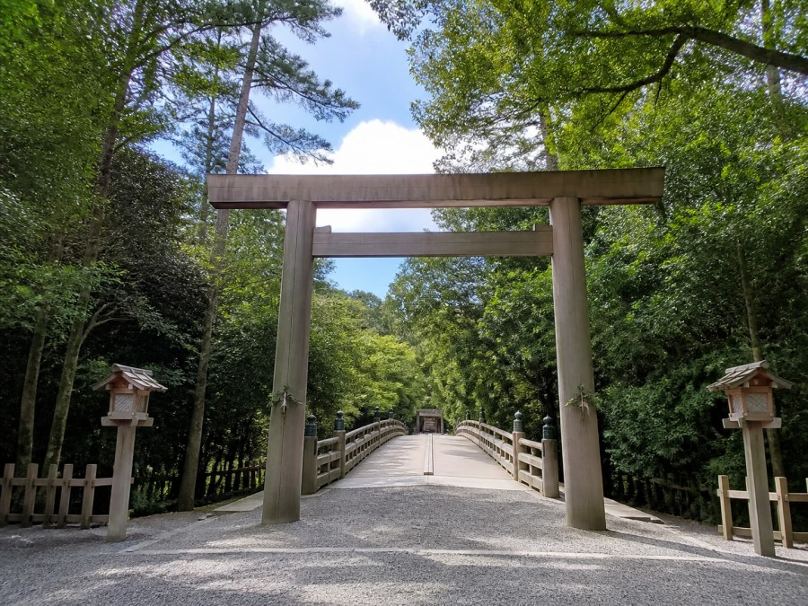
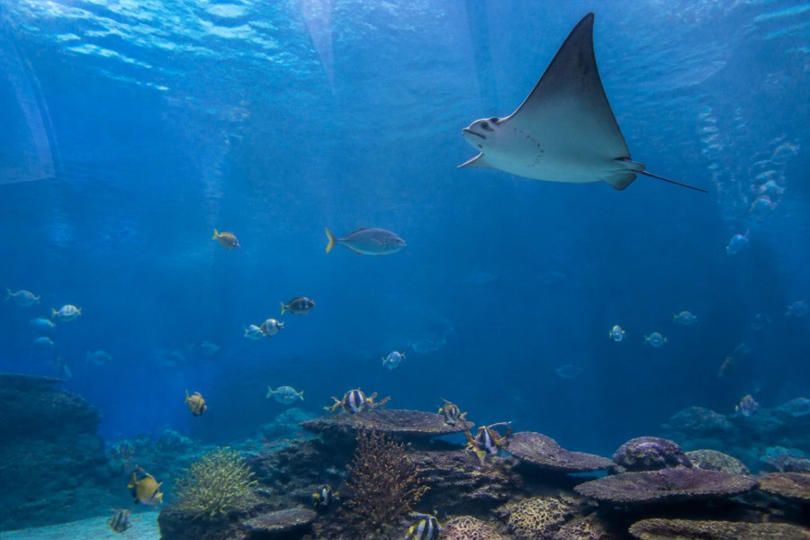
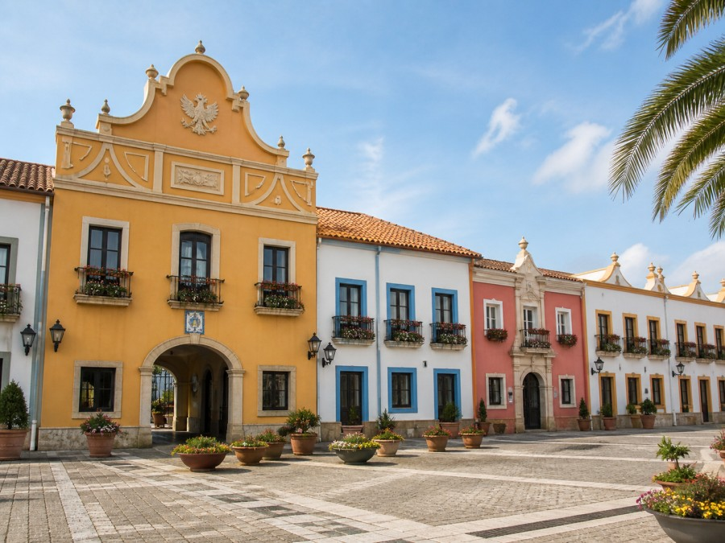
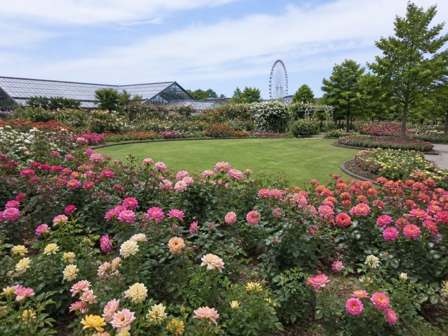
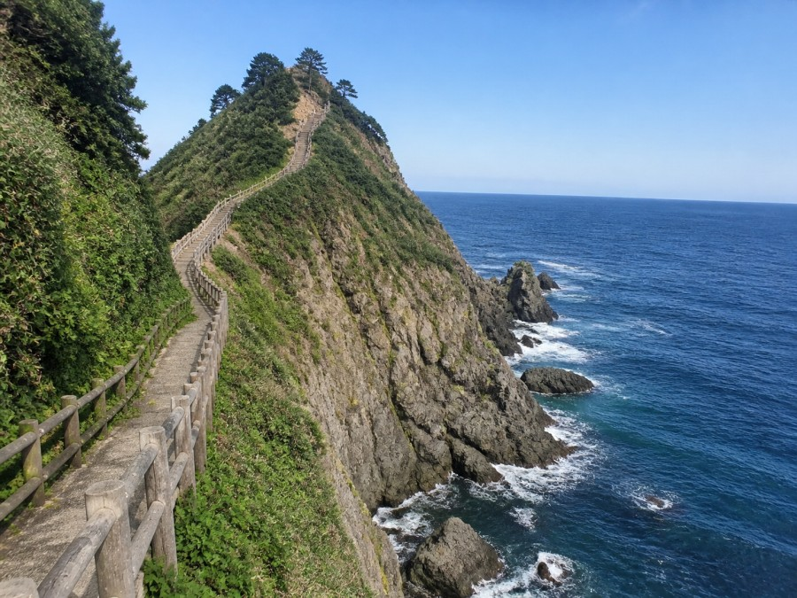

観光スポットマップ
地図のマーカーをクリックすると、写真と紹介が表示されます。
観光スポット一覧

伊勢神宮
長い歴史を持ち、豊かな森に囲まれた三重県を代表する神社です。

鳥羽水族館
海や川の生きものを幅広く観察できる、展示の種類が多い水族館です。

志摩スペイン村
スペインの街並みやアトラクション、ショーを楽しめるテーマパークです。

なばなの里
季節の花や冬のイルミネーションが人気の花と緑のテーマパークです。

鬼ヶ城
波や風によって作られた不思議な岩の景色と熊野灘を楽しめます。
もっと詳しく紹介
伊勢神宮
内宮と外宮を中心とした神社です。宇治橋を渡ると森に囲まれた参道が続き、落ち着いた雰囲気を感じられます。
鳥羽水族館
飼育している生きものの種類が多く、いろいろな海の環境を見られます。ジュゴンの展示でも知られています。
志摩スペイン村
異国らしい街並みの中で、乗り物やショーを楽しめます。家族や友だちとのお出かけにおすすめです。
なばなの里
春から秋は花畑、冬はイルミネーションが見どころです。時期によって違う景色を楽しむことができます。
鬼ヶ城
熊野灘に面した岩場に遊歩道があります。自然が長い時間をかけて作った迫力のある景色が魅力です。